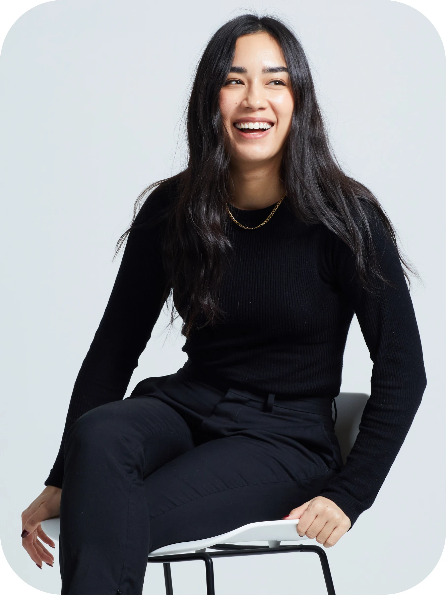

About
Hi, I'm Christina.
Professional untangler and
creative operations consultant.
Eight years behind the scenes of creative production, now helping independent agencies run smoother studios.
- 8+ years
- in creative production
- 25+
- designers and freelancers managed
- 10+
- brands supported

Experience
Agency side. In-house side. Your side.
-
2021–2023 · In-house
Accent Group
Ecommerce Studio Manager
Built and ran an in-house ecommerce studio supporting more than ten brands, including Vans, Dr. Martens, Hoka and Skechers.
-
2023–2025 · Agency
Big Group
Creative Project Manager
Ran resourcing and production workflows for 25+ designers and freelancers on global brand accounts, including Mastercard, Samsung, Motorola and Dacia.
-
Now
The Creative Reset
Creative operations consultant
Bringing that experience to independent agencies, without another full-time hire.
See services
How I work
Good processes should make people's jobs easier, not give them another spreadsheet to maintain.
- Curious before criticalI listen first, and find out why things work the way they do
- Practical by designChanges your team can realistically adopt and keep up
- Collaborative from the startThe people doing the work help shape how it improves
- Clear from beginning to endYou'll always know what we're doing and what you'll get
Working with me
A fresh pair of eyes and a practical pair of hands.
You'll work directly with me, from our first conversation to the final handover. No account managers, no rotating consultants.
- 01
We talk
About what's stuck and what you'd like to fix.
- 02
I listen
To your team, and how work really moves.
- 03
We fix it
With practical changes that fit your studio.
- 04
You run with it
With clear next steps your team owns.
Kind words
Testimonials
"She made my day-to-day work run so smoothly, and I always felt I could rely on her."
Christina was an absolute delight to work with. She was always so friendly, approachable and incredibly professional. She has fantastic communication skills, is driven, self-initiated and always one step ahead. She made my day-to-day work run so smoothly, and I always felt I could rely on her to keep things organised and moving in the right direction.
On top of all her professionalism, Christina brings such great energy and enthusiasm to a team. She has a really positive attitude and makes working together that much more enjoyable. I genuinely loved working with her and feel she was a real asset to the team. I wouldn't hesitate to recommend her to anyone.
"Christina is a talented project manager with a strong work ethic and a calm, solutions-focused approach to projects and planning. She is a reliable and collaborative team member who works well with creatives and account teams alike. She is comfortable working in multiple planning platforms and has a passion for the creative process."
"We were a brand new studio with no team and no processes in place. Christina designed our whole workflow and got us up and running with ease, allowing us to juggle multiple competing demands quickly."